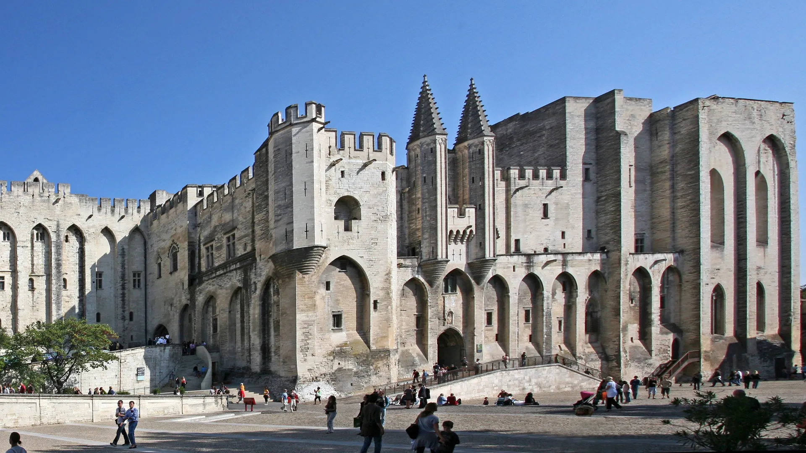

{kind=link}
관광·미술관
Nous avons déjà des billets.
이미 표가 있습니다.
누 자봉 데자 데 비예

1309년부터 1377년까지 7명의 프랑스인 교황이 로마를 떠나 가톨릭 세계를 통치했던 '아비뇽 유수(Avignon Papacy)'의 심장부이자 서유럽 최대 크기의 중세 고딕 석조 궁전(15,000㎡)이다.
이탈리아 귀족 파벌의 내전과 폭동으로 극도로 불안정했던 로마를 벗어나, 프랑스 국왕 필리프 4세의 비호 아래 교황령 콩타 브네생(Comtat Venaissin)과 인접한 론(Rhône) 강의 전략 거점 아비뇽에 자리 잡았다.
단순한 종교 성당이 아니라, 당시 전 유럽에서 쏟아져 들어오던 십일조 헌금과 외교 문서를 처리하던 '거대한 중세 행정 기계이자 난공불락의 군사 요새'로서의 위용을 고스란히 보여준다.
"가구와 집기가 사라진 거대한 빈 석조 방들을 걸으며, 당시 전 유럽을 호령하던 교황청의 압도적인 권력 공간과 비례를 체감하는 중세 건축의 정점이다." 전 관람객에게 무료 제공되는 3D 태블릿 히스토패드(HistoPad)를 들고 각 방을 비추어 14세기 호화로운 태피스트리와 가구, 연회 식탁을 증강현실로 확인한 뒤 실제 벽면의 프레스코화와 벽난로 흔적을 살펴보는 90~120분 코스가 필수적이다.
| 운영시간 | 3/1–11/1 09:00–19:00 |
|---|---|
| 휴무 | 연중무휴 (매일 개방, 3/1~11/1 09:00~19:00) |
| 요금 | €16 (통합권 궁+정원+다리 €19.50, 2026-08-01 인상) |
| 예약 | 시간지정 예약 의무 아님 (권장) |
궁전은 단일 시기에 지어진 것이 아니라 성격이 정반대인 두 교황의 합작품이다. - 구궁전 (베네딕토 12세, 1334–1342): 엄격한 시토회 수도사 출신 교황답게 장식을 극도로 절제한 금욕적이고 견고한 요새 형태. - 신궁전 (클레멘스 6세, 1342–1352): 프랑스 대귀족 출신 교황으로, 교황의 군주적 위엄을 과시하기 위해 화려한 고딕 양식으로 대연회장(Grand Tinel), 대예배당(Grande Chapelle), 사슴의 방을 증축함.
| 항목 | 상세 정보 |
|---|---|
| 위치 | Place du Palais, 84000 Avignon |
| 운영 시간 | 연중무휴 (9월 기준 매일 09:00–19:00, 마지막 입장 마감 18:00) |
| 입장료 | 일반 €12.00, 할인(12–17세/학생) €10.00, 12세 미만 무료 (히스토패드 태블릿 대여 무료 포함) |
| 통합권 (추천) | Palais + Pont Saint-Bénézet 통합권: 성인 €14.50 (생베네제 다리 현장 매표 대비 약 €3.50 절감) |
| 사전 예약 (필수 권장) | 공식 웹사이트(palais-des-papes.com)에서 입장 시간(Time-slot) 사전 지정 필수. 성수기 및 주말에는 현장 대기줄이 매우 길거나 조기 매진됨 |
| 추천 주차장 | Parking du Palais des Papes (궁전 광장 지하 직결 800대 규모 유료 지하주차장, 시간당 약 €2.40) |
| 접근 팁 | 성벽 내부 도로는 일방통행이 많고 좁으므로 외곽 도로(Boulevard de la Ligne)를 통해 주차장 진입 권장 |
Nous avons déjà des billets.
이미 표가 있습니다.
누 자봉 데자 데 비예
On peut prendre des photos ?
사진 찍어도 되나요?
옹 푀 프랑드르 데 포토
Où commence la visite ?
관람은 어디서 시작하나요?
우 코망스 라 비지트

높이 15m 거대한 지하 백색 석회암 채석장 동굴 전체를 디지털 캔버스로 변모시킨 세계 최초·최대 규모의 몰입형 미디어 아트 공간. 7,000㎡ 암벽과 바닥을 감싸는 빛과 음악의 향연.

기원전 6세기 켈트 성소에서 헬레니즘 도시를 거쳐 로마 제국의 온천 휴양도시로 번영했던 거대한 고대 발굴 유적지. 갈리아에서 가장 완벽하게 보존된 기원전 1세기 로마 영묘와 개선문 '레 장티크(Les Antiques)'.

알피유(Alpilles) 산맥 해발 245m 석회암 절벽 위에 우뚝 솟은 중세 독수리 요새 마을. 자연 암반과 성벽이 하나로 결합된 레보 성채(Château des Baux) 폐허와 올리브 계곡 대파노라마.

세계적인 식물학자 파트리크 블랑의 300㎡ 거대한 수직 정원(Mur Végétal) 외벽 아래 40여 개 프로방스 전통 식재료 좌판이 모인 아비뇽의 활기찬 실내 중앙 미식 시장.

12세기 론(Rhône) 강을 건너 교황령 아비뇽과 프랑스 왕국을 잇던 920m의 유일한 석조 다리. 소빙하기의 거센 홍수로 22개 아치 중 4개와 2층 생니콜라 예배당만 남은 유네스코 세계유산.

우제스의 외르 샘에서 고대 로마 식민도시 님(Nîmes)까지 50km를 오직 중력만으로 흐르게 한 기원 1세기 3층 로마 수도교. 높이 48.8m 세계 최고(最高)의 고대 수력 토목공학 걸작(유네스코 세계유산).